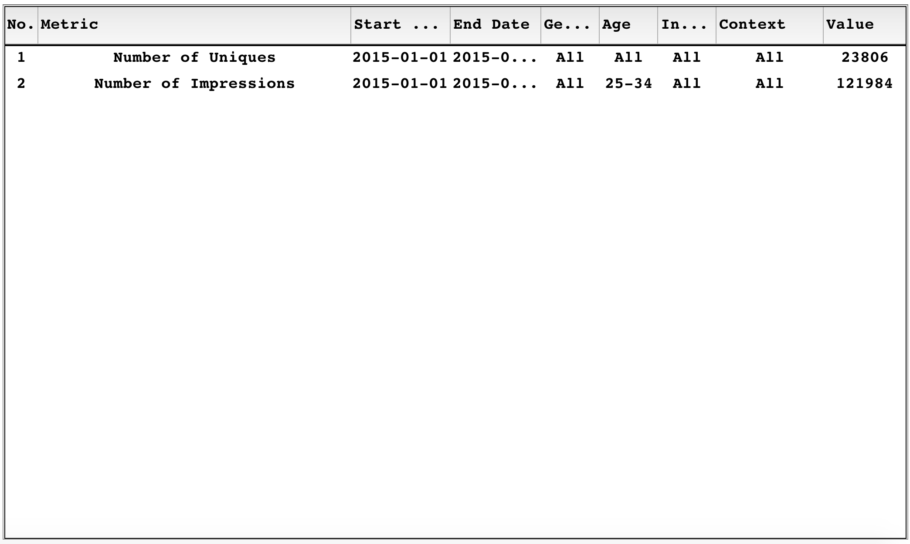

This section explains in detail how to filter the campaign using the data extracted from the CSVs. It provides an in-depth overview including screenshots of how to use each feature. This section describes the Metrics advanced view panel.
| Name | Meaning |
| number of impressions | number of times an ad appears to a user regardless whether they have clicked on it or not |
| number of clicks | number of times a user clicks on an ad that is shown to them |
| number of uniques | the number of unique users that click on an ad during the course of a campaign |
| number of bounces | the number of times a user clicks on an ad, but then fails to interact with the website |
| number of conversions | number of times a user clicks and then acts on an ad |
| total cost | the cost of a particular click (usually determined through an auction process) |
| click-through-rate(CTR) | the average number of clicks per impression |
| cost-per-acquisition(CPA) | the average amount of money spent on an advertising campaign for each acquisition (i.e., conversion) |
| cost-per-click(CPC) | the average amount of money spent on an advertising campaign for each click |
| cost-per-thousand impressions | the average amount of money spent on an advertising campaign for every one thousand impressions |
| bounce rate | the average number of bounces per click |
The picture above shows a brief overview of the functions of the Metrics page. It contains features to add a new filter metric and to see the displayed filtered metric.
Adding a metric works by firstly pressing Add Metric button:
This results in a new metric panel that looks like this:
Then the user has to specify the metric type(for reference about what each metric type means: click here) by clicking on the metric:
To understand what each filter means, navigate to Filtering a metric.
To display the chosen metric the user presses Update button:
To remove a metric the user has to press on the X button on the metrics filter panel:
This removes the metric from the table on the right as well.
The user can filter a metric by applying the following filters:
By pressing the Update button the metric gets added to the section on the right with the filters defined by the user and the number of entries that correspond to that query:
